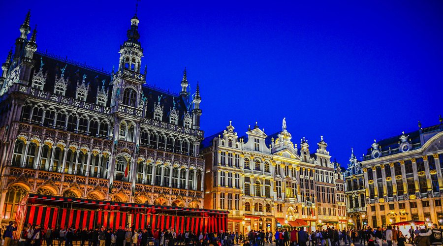
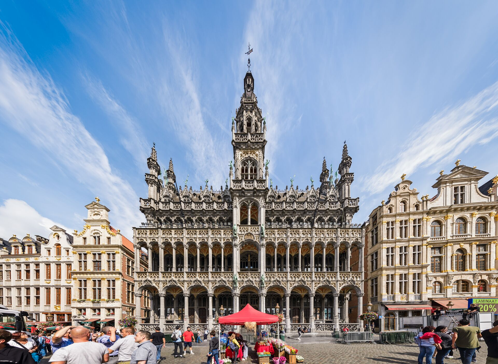
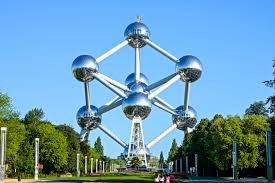
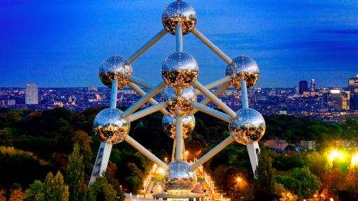
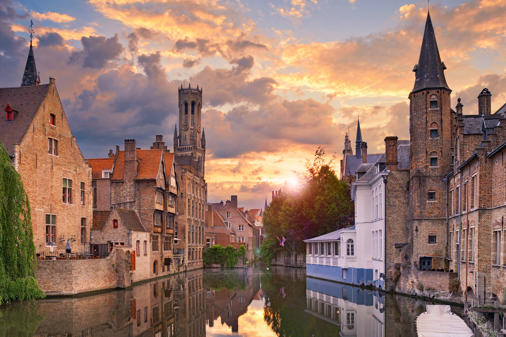
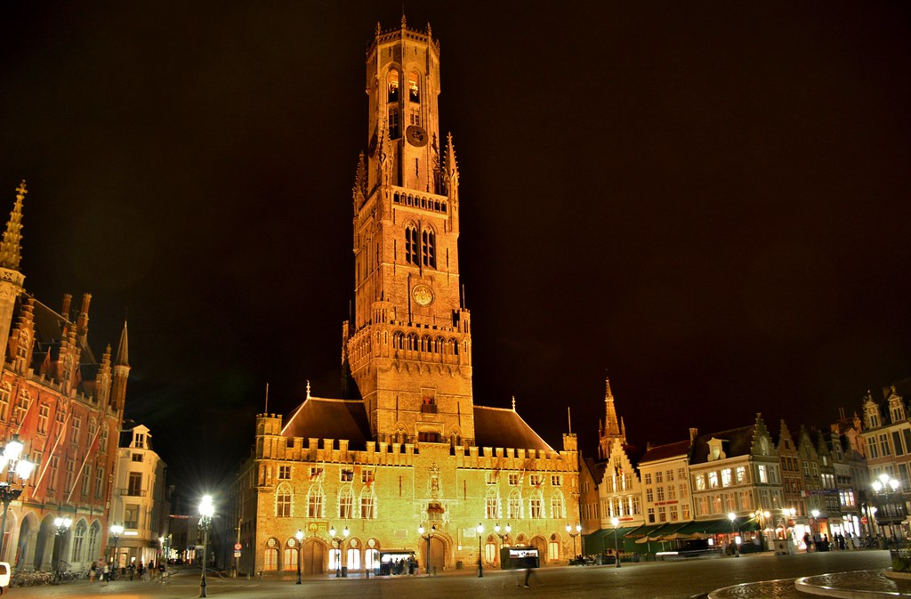
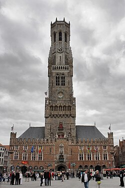
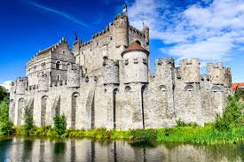
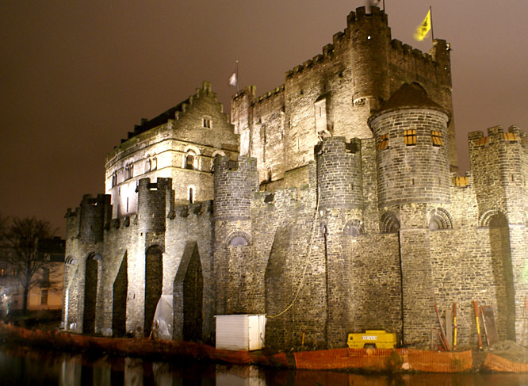
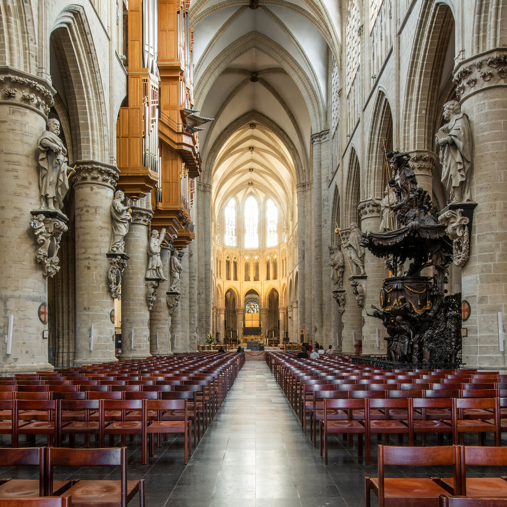

Grand Place, Brussels


Standing at the heart of Brussels, Grand Place is one of the most stunning city squares in Europe and a true symbol of Belgium’s
history and pride. Surrounded by richly decorated guildhalls, the Town Hall, and the King’s House, the square showcases breathtaking
Gothic and Baroque architecture that dates back to the 17th century. Every detail — from golden façades to ornate statues — tells a
story of Brussels’ past and craftsmanship. By day, Grand Place feels elegant and alive; by night, it glows with warm lights, creating
an almost magical atmosphere. Whether you’re visiting during the famous Flower Carpet or simply passing through, Grand Place is more
than a square — it’s the beating heart and soul of Brussels.
Best time to visit:
Spring to early autumn for mild weather; early morning or late afternoon to avoid crowds. Evening visits are magical when the square is
illuminated.
Opening hours:
Open daily; the square itself is public and accessible at all times. Shops and museums around the square have varying hours (usually 10:00–18:00).
Entry:
Free to enter the square itself. Some attractions/museums around require a small ticket (€5–€10).
SEE MAP
Atomium, Brussels


Rising above Brussels with its futuristic silhouette, the Atomium is one of Belgium’s most iconic and instantly recognizable landmarks.
Built for the 1958 World Expo, it represents an iron crystal magnified billions of times — a bold symbol of scientific progress and
optimism. Visitors can explore its connected spheres, which host exhibitions, interactive displays, and panoramic viewpoints. From the
top sphere, you get sweeping views over Brussels that feel straight out of a sci-fi movie. At night, the Atomium lights up, turning
into a glowing masterpiece against the city skyline. More than just a monument, the Atomium captures Belgium’s innovative spirit and
proves that history doesn’t always have to look ancient to be timeless.
Best time to visit:
Spring and summer (April–September) for clear views and pleasant weather. Late afternoon is perfect for photos, especially around sunset.
Opening hours:
Daily, approximately 10:00–18:00h. Last entry usually one hour before closing. Extended hours may apply during holidays and special events.
Entry:
Ticket required. Standard ticket price: approximately 16–18 €.
Discounts available for students and children.
SEE MAP
Bruges (Brugge)


Perched along picturesque canals and cobblestone streets, Bruges (Brugge) is often called the “Venice of the North” for its stunning
medieval architecture and romantic waterways. The city’s historic center is remarkably well-preserved, with charming squares, ornate
guild houses, and towering belfries that tell stories of centuries past. Visitors can explore the canals by boat, wander through the
bustling Markt square, or visit iconic landmarks like the Belfry of Bruges and the Basilica of the Holy Blood. Bruges isn’t just a
feast for the eyes — it’s a journey through history, art, and Belgian culture.
Best time to visit:
Spring (April–June) and early autumn (September–October) – pleasant temperatures, flowers in bloom and less
crowded than in summer. In winter, the city is magical, especially during the Christmas market.
Opening hours:
The city is open all year round. Main attractions, museums, and canal tours usually operate daily, from morning
to late afternoon. Some attractions extend hours during summer.
Entry:
Free to explore the city. Individual attractions (museums, Belfry, canal cruises) require separate tickets.
Canal boat tours cost approximately 12–15 €.
SEE MAP
Belfry of Bruges (Belfort)


Rising majestically above Markt Square, the Belfry of Bruges (Belfort) is one of the city’s most iconic landmarks. Built in the 13th
century and standing over 80 meters tall, this medieval bell tower has witnessed centuries of Bruges’ history and offers stunning
panoramic views of the city and its winding canals. Visitors can climb the narrow 366-step staircase to reach the top, passing old
treasury rooms and historic bells along the way. The Belfry isn’t just an architectural masterpiece — it’s a symbol of Bruges’ civic
pride, resilience, and timeless charm.
Best time to visit:
Spring to early autumn – nice weather and the best visibility from the top. Early morning is the best choice
if you want to avoid crowds and have a more peaceful ascent.
Opening hours:
Open daily. Usually from morning until late afternoon. Last entry is typically 30–45 minutes before closing.
Entry:
Entrance fee is approximately 14–15 €. Reduced prices available for students and children.
SEE MAP
Ghent Castle of the Counts (Gravensteen)


Standing proudly in the heart of Ghent, the Castle of the Counts (Gravensteen) is a stunning medieval fortress that takes visitors
back to the days of knights and nobility. Built in the 12th century, its imposing stone walls, towers, and battlements showcase the
city’s rich history and strategic importance. Inside, visitors can explore the armory, dungeons, and grand halls, while the ramparts
offer breathtaking views of Ghent’s canals and historic rooftops. Gravensteen isn’t just a castle — it’s a journey through time, where
every corner tells a story of power, intrigue, and the enduring spirit of this Belgian city.
Best time to visit:
Spring and summer – longer days, nicer weather and a great view from the towers. Early morning or late afternoon are best for less crowds.
Opening hours:
Open daily. Typically from morning until early evening. Last entry is usually about 1 hour before closing.
Entry:
Entrance fee is approximately 12–13 € for adults. Discounts available for students and children.
SEE MAP
Cathedral of St. Michael and St. Gudula, Brussels


Rising majestically in the heart of Brussels, the Cathedral of St. Michael and St. Gudula is a masterpiece of Gothic architecture
and a symbol of Belgium’s religious heritage. Constructed over several centuries, its soaring spires, intricate stone carvings, and
stunning stained glass windows create a truly awe-inspiring sight. Inside, visitors can admire ornate chapels, historic tombs, and an
atmosphere of serene reverence. The cathedral also hosts important national ceremonies, making it not just a monument but a living
part of Belgium’s cultural and spiritual life.
Best time to visit:
Spring and early autumn – ugodne temperature, više dnevnog svjetla i manje gužve. Jutarnji sati su top ako želiš mir i dobre fotke.
Opening hours:
Open daily
Monday–Friday: usually from early morning until early evening
Saturday–Sunday: opens later in the morning (check if there’s a service scheduled)
Entry:
Free entry, small fee may apply for special areas, exhibitions, or concerts.
SEE MAP